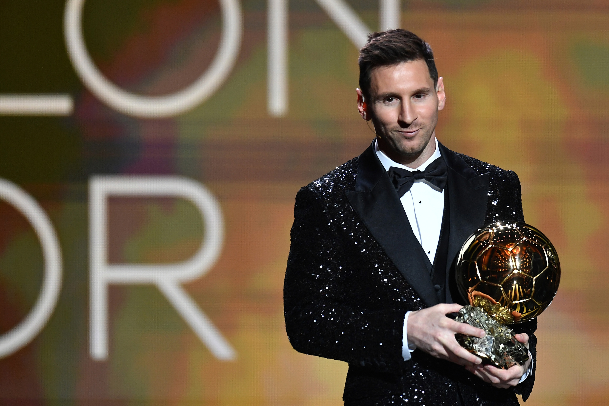
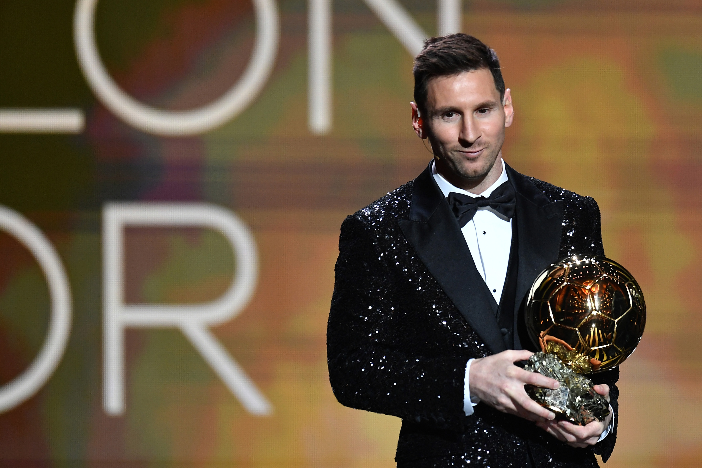

.jpeg)
El millor jugador de la història

Lionel Andrés Messi (Rosario, 24 de juny de 1987), també conegut com a Leo Messi, és un futbolista argentí que juga com a davanter i és el capità de l'Inter Miami, la Major League Soccer i la selecció argentina. Jugador històric del Futbol Club Barcelona, on va jugar durant 20 anys, fins a la seva marxa el 2021, va guanyar 35 títols, entre ells 10 Lligues, 7 Copes del Rei i 4 Campionats de la UEFA. Considerat un dels millors jugadors de tots els temps, Messi ha guanyat un rècord de 8 Pilotes d'Or, un rècord de 6 Botes d'Or europees i va ser inclòs a l'equip ideal de la Pilota d'Or. Ostenta el rècord de marcar més gols a la Lliga Nacional (474), marcar més gols en una temporada a la Lliga Nacional i Europa League (50), marcar més hat-tricks al Campionat Nacional de lliga (36 ) i Lliga de Campions de la UEFA (8 ). És el que més assistències té a Lliga (192), en una temporada a Lliga (21) ia Copa Amèrica (17). També té el rècord golejador internacional d'un futbolista sud-americà (96). Messi ha marcat més de 750 gols amb el club i amb la selecció absoluta, i és el jugador amb més gols per a un sol club (672). El seu estil de joc com a petit regatejador esquerre ha estat comparat amb el seu compatriota. Diego Armando Maradona, que va qualificar Messi com el seu successor. Va començar a jugar a futbol des de molt jove i el seu potencial va ser ràpidament identificat pel Futbol Club Barcelona. Va deixar Rosario, mentre jugava a l'equip CA Newell's Old Boys, i es va mudar a Europa amb la seva família, on el FC Barcelona es va oferir a pagar el tractament hormonal (900 dòlars al mes). Va debutar amb el primer equip en partit oficial la temporada 2004-05 i va començar a destacar la temporada següent.
Lionel Andrés Messi va fer el seu debut amb el FC Barcelona el 16 d'octubre de 2004, a dia de avui segueix sent jugador professional pel Inter Miami CF acumulant un total de 19 com a jugador professional. Durant aquests anys ha marcat un total de 821 gols i 362 assistències.
Lionel Andrés Messi va fer el seu debut a la Lliga espanyola amb el FC Barcelona el 16 d'octubre de 2004 i va jugar-hi fins la temporada 2020-2021 que sumen un total de 17 edicions. Durant aquests anys ha marcat un total de 474 gols en lliga.
Lionel Andrés Messi va debutar a la màxima categoria europea, la UEFA Champions League el 7 de desembre de 2004, i la seva última edició que va competir va ser l'any 2023 amb el Paris Saint-Germain. Ha marcat un total de 120 gols en edicions de UCL.
Lionel Andrés Messi va fer el debut amb la selecció argentina l'any 2005 desde aquest any ha jugat els 18 anys consecutius amb la selecció acumulant 106 gols i 54 assistències.
Lionel Andrés Messi va fer el debut en un mundial amb la selecció argnetina el 16 de juny de 2006 desde les hores ha participat en les edicions de 2006, 2010, 2014, 2018 i 2022 on va sortir campió. Suma un total de 5 edicions sent un dels jugadors amb mes mundial empatat amb altres jugadors. Ha anotat 13 gols i 8 assistències en mundials.
Lionel Andrés Messi va fer el debut en una copa America el 28 de juny de 2007 desde les hores ha participat en 5 edicions on ha anotat 13 gols i 15 assistències.
IMATGES MES ICÒNIQUES DE LEO MESSI


 


| CLUB / COMPETICIÓ | Gols | Assistències |
| FC BARCELONA | 672 | 271 |
| LLIGA | 474 | 192 |
| CHAMPIONS | 120 | 65 |
| ARGENTINA | 106 | 54 |
| PARIS SAINT-GERMAIN | 32 | 35 |
| INTER MIAMI FC | 32 | 35 |
| TOTAL | 821 | 362 |